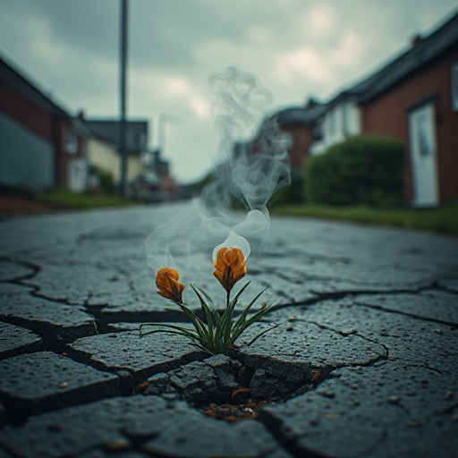

Reference Frames
Motif Storyboard

The spine. Every section returns here — the world changes around them, they don't.

Destruction and growth in the same frame. Flowers pushing out of the wreckage.

Flowers that look like smoke. Beauty from decay — the estate's own nature.

Little cousins — fighting, laughing, playing. Innocence and aggression coexisting.

The frame-break. Direct, political, quiet — held with dignity, not protest.

Opens on his hand holding the laces. The body as throughline — hanging on, or letting go.